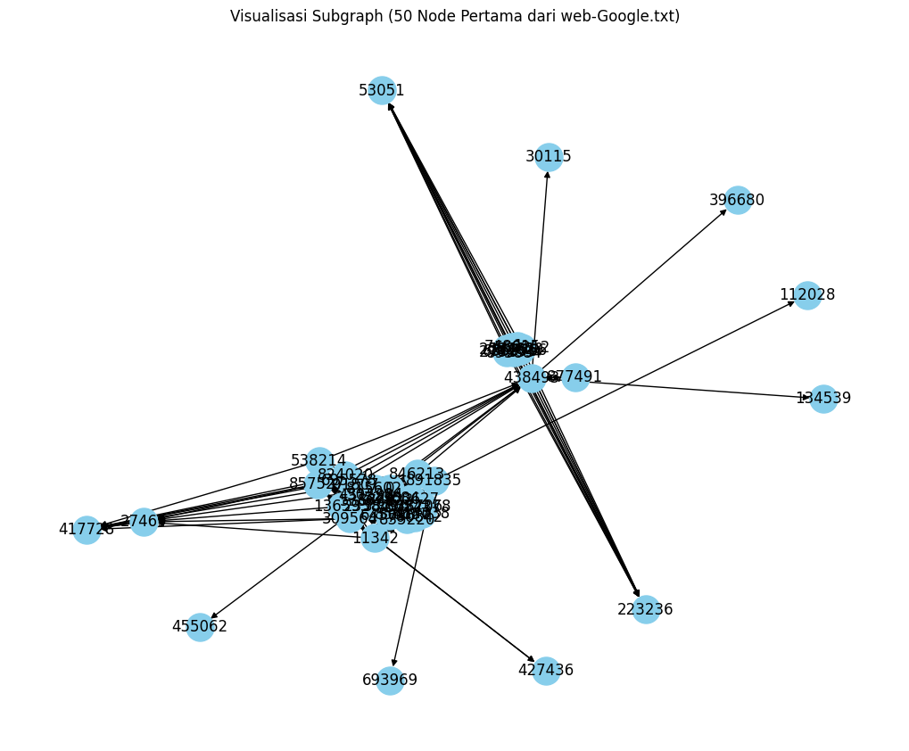

Tugas 7 | Analisis PageRank Dataset web-google#
Graph (Directed)
Jumlah node & edge
Visualisasi sebagian graph
5 Node dengan PageRank tertinggi
Dataset ini berisi pasangan (FromNodeId, ToNodeId)
yang merepresentasikan arah tautan antar halaman web.
import library#
import pandas as pd
import networkx as nx
import matplotlib.pyplot as plt
from sklearn.feature_extraction.text import TfidfVectorizer
from sklearn.metrics.pairwise import cosine_similarity
# Baca dataset dengan mengabaikan baris komentar (yang diawali '#')
df_web = pd.read_csv("web-Google.txt", sep='\t', comment='#', names=['FromNodeId', 'ToNodeId'])
df_web
| FromNodeId | ToNodeId | |
|---|---|---|
| 0 | 0 | 11342 |
| 1 | 0 | 824020 |
| 2 | 0 | 867923 |
| 3 | 0 | 891835 |
| 4 | 11342 | 0 |
| ... | ... | ... |
| 78318 | 495600 | 271199 |
| 78319 | 495600 | 407927 |
| 78320 | 495600 | 555924 |
| 78321 | 495600 | 628974 |
| 78322 | 495600 | 905532 |
78323 rows × 2 columns
# Buat directed graph menggunakan NetworkX
G_web = nx.DiGraph()
G_web.add_edges_from(zip(df_web['FromNodeId'], df_web['ToNodeId']))
print(f"Jumlah Node: {G_web.number_of_nodes()}")
print(f"Jumlah Edge: {G_web.number_of_edges()}")
Jumlah Node: 10000
Jumlah Edge: 78323
# Hitung PageRank
pagerank_web = nx.pagerank(G_web)
# Urutkan node berdasarkan nilai PageRank
sorted_pr_web = sorted(pagerank_web.items(), key=lambda x: x[1], reverse=True)
print("\n5 Node dengan PageRank tertinggi:")
for node, score in sorted_pr_web[:5]:
print(f"Node {node}: {score}")
5 Node dengan PageRank tertinggi:
Node 486980: 0.006515404427077107
Node 285814: 0.004632753166876134
Node 226374: 0.003301453419813612
Node 163075: 0.0032880956215481367
Node 555924: 0.002756058619751608
# Visualisasi sebagian graph (misal 50 node pertama)
plt.figure(figsize=(10,8))
sub_web = G_web.subgraph(list(G_web.nodes)[:50])
nx.draw(sub_web, with_labels=True, node_size=500, node_color='skyblue', arrows=True)
plt.title("Visualisasi Subgraph (50 Node Pertama dari web-Google.txt)")
plt.show()
